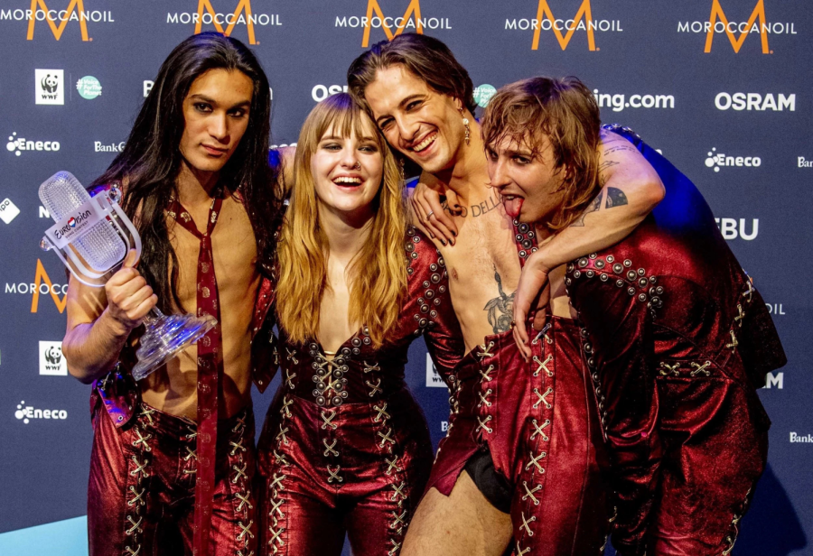
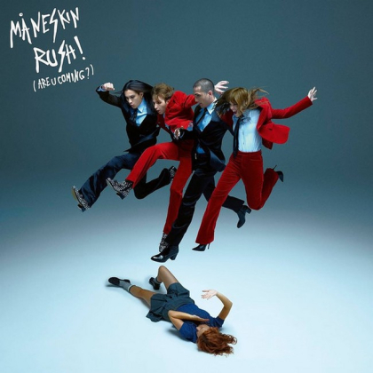
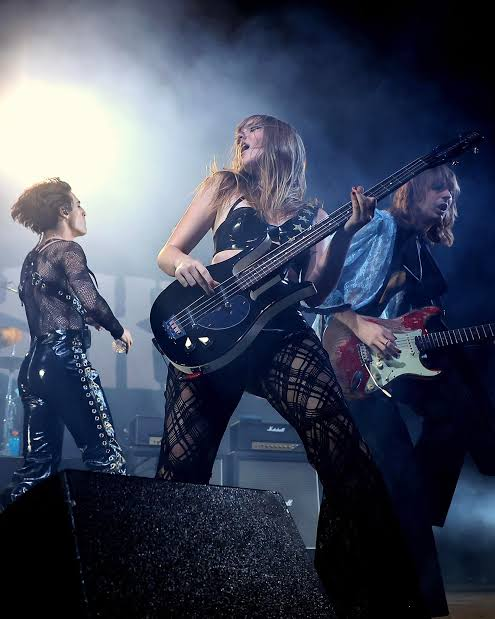
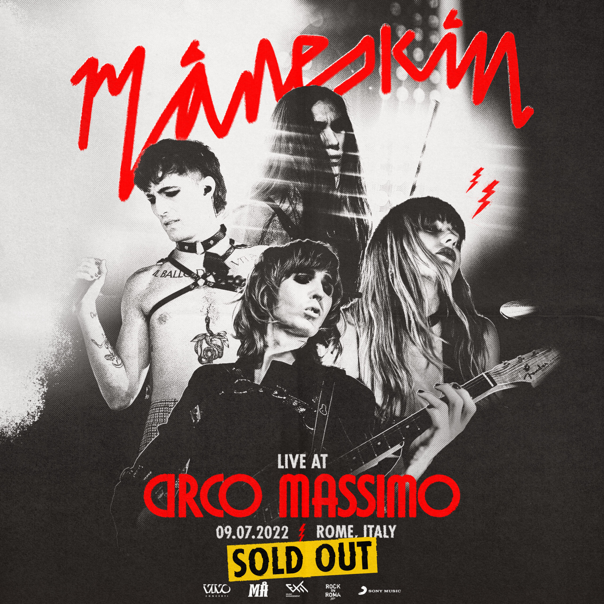

Тріумф на Євробаченні 2021
Виступ у Роттердамі з вибуховою композицією «Zitti e buoni», який приніс Італії перемогу та відкрив гурту двері на світову сцену.

Måneskin — це італійський рок-гурт, створений у Римі у 2016 році. До складу входять вокалист Даміано Давід, басистка Вікторія Де Анджеліс, гітарист Томас Раджи та барабанщик Ітан Торкйо. Вони здобули світову славу після перемоги на пісенному конкурсі «Євробачення-2021» з піснею «Zitti e buoni».
Їхня творчість поєднує елементи глем-року, хард-року та поп-року. Гурт відомий своїми епатажними сценічними образами, зухвалим стилем та потужною енергетикою на живих концертах по всьому світу.

Унікальний глем-рок стиль, що поєднує класичний рок із сучасними трендами та яскравими сценічними образами.
Перемога на Євробаченні 2021 принесла гурту миттєве світове визнання та мільйони нових шанувальників.
Потужні живі виступи з неймовірною енергетикою, які збирають повні стадіони по всьому світу.
Харизматичний вокаліст Даміано Давід та талановиті музиканти, які створюють неповторну хімію на сцені.
Активна творча діяльність: нові альбоми, сингли та колаборації з відомими артистами.
Сильний вплив на молодь та популяризація рок-музики серед нової генерації слухачів.

Виступ у Роттердамі з вибуховою композицією «Zitti e buoni», який приніс Італії перемогу та відкрив гурту двері на світову сцену.

Масштабні стадіонні концерти в Європі, Північній Америці та Азії з неймовірною світловою режисурою та шаленим контактом із публікою.

Епатажне шоу на одній із найвідоміших фестивальних сцен світу, що закріпило статус Måneskin як головних рок-революціонерів сучасності.

Історичний виступ перед 70-тисячною аудиторією у легендарному Circo Massimo — повернення до витоків у рідному місті.
«Їхній живий концерт у Варшаві — це чистий адреналін! Даміано тримає увагу кожного глядача з першої до останньої секунди, а бас-партії Вікторії просто зносять дах.»
«Måneskin повернули справжній, зухвалий дух рок-н-ролу в мейнстрим. Вони довели, що живі інструменти та італійська мова можуть очолювати світові чарти.»
«Альбом "Teatro d'ira: Vol. I" заслухала до дірок. Поєднання ліричних балад на кшталт "Coraline" та драйвових треків створює неймовірний контраст.»
«Рідкісний випадок, коли молодий гурт звучить наживо навіть потужніше, ніж у студійному записі. Неймовірна зіграність усіх чотирьох учасників!»